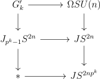
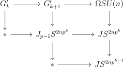
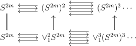
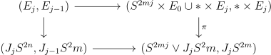
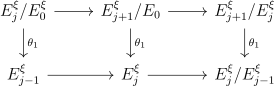
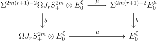
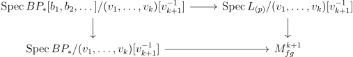

\(\MU \) is a strong invariant of spaces.
Theorem 1.1 (Nilpotence Theorem). If \(F \to X\) is a map from a finite spectrum to a spectrum which is nulhomotopic after smashing with \(\MU _*\), then it is smash-nilpotent.
If \(R\) has a map \(R\otimes R \to R\), and \(\alpha \) is a homotopy class in \(R\) in the kernel of the Hurewicz map, then by the nilpotence theorem it is nilpotent. On the other hand let \(F \to X\) be a map as in the above theorem. It is smash-nilpotent iff the dual map \(\SP \to DF\otimes X\) is, so WLOG \(F\) is a sphere. If the map is in the kernel of the \(\MU _*\) Hurewicz map, then its nulhomotopy takes place in \(\MU \otimes X'\) for some finite spectrum in X, so we can assume \(X\) is finite, and after suspending, it can be assumed that we have a map \(\SP ^k \to X\), where \(X\) is \(0\)-connected. Replacing \(X\) with \(\oplus X^{\otimes n}\), we see that the following version of the theorem is equivalent:
Theorem 1.2. If \(R\) is a connective associative ring spectrum of finite type, and \(\alpha \) is a homotopy class having nilpotent image in the \(\MU \) Hurewicz map, then \(\alpha \) is nilpotent.
Being nilpotent in the \(E\)-Hurewicz map is equivalent to \(E\otimes R[\alpha ^{-1}]=0\), a condition that can be checked \(p\)-locally, so we will work \(p\)-locally.
To prove this, we will interpolate between the \(\MU \), and the ring spectrum \(\SP \), which obviously detects nilpotence. Namely, \(\MU \) is the Thom spectrum of the identity of \(BU\), and \(BU = \Omega SU\), so \(X(n)\), defined as the Thom spectra of \(\Omega SU(n)\) interpolate between \(X(0)=\SP \) and \(\varinjlim X(n) = \MU \). In particular if \(\alpha \otimes 1_{\MU }\) is \(0\), then so is \(\alpha \otimes 1_{X(n)}\) for sufficiently large \(n\). Thus it suffices to show:
Fix an \(n\). To prove this, we will again interpolate between the two as follows: There is a fibration \(SU(n) \to SU(n+1) \to S^{2n+1}\), which we can loop. Then since \(\Omega S^{2n+1} = JS^{2n})\) comes with a natural filtration \(J_kS^{2n}\). Let \(G_k'\) be the result of pulling back the fibration along \(J_{p^{k-1}}\) in this filtration, and let \(G_k\) be its Thom spectrum. The following two results will then prove the nilpotence theorem:
Let’s prove the first one first. Since \(\Omega SU(n)\) is an \(E_2\)-space, \(X(n)\) is an \(E_2\)-ring. We would like to first establish:
Proposition 1.6. \[\Ext _{X(n+1)_*X(n+1)}(X(n+1)_*,X(n+1)_*(G_k\otimes R))\] has a vanishing line of slope tending to \(0\) as \(k \to \infty \).
The Serre spectral sequence and the Thom isomorphism give that the homology of \(X(n)\) is \(\ZZ [b_1,\dots ,b_{n-1}]\), where the classes \(b_i\) come from restricting the complex orientation \(\Sigma ^{-2}\CC \PP ^\infty \to \MU \) to a “truncated orientation” \(\Sigma ^{-2}\CC \PP ^n \to X(n)\). The Eilenberg-Moore specrtal sequence shows that \(G_k\) has homology \(\ZZ [b_1,\dots ,b_{n-1}]\{1,b_n,\dots ,b_n^{p^k-1}\}\). The truncated orientation causes Atiyah Hirzebruch spectral sequences to degenerate, resulting in the following:
Lemma 1.7. If \(n \geq m\), \(X(n)_*X_m = X(n)_*[b_1,\dots b_{m}]\).
\(X(n+1)_*G_k = X(n+1)_*[b_1,\dots ,b_n]\{1,b_{n+1},\dots ,b_{n+1}^{p^k-1}\}\).
In particular, \(X(n+1)_*X(n+1) = X(n+1)_*\otimes \ZZ [b_1,\dots ,b_n]\), so it is flat over \(X(n+1)_*\) and is in fact a split Hopf algebroid. Thus the \(E_2\) term of the \(X(n+1)\)-based Adams spectral sequence for \(G_k\otimes R\) is \[\Ext _{X(n+1)_*X(n+1)}(X(n+1)_*,X(n+1)_*(G_k\otimes R))\] Since \(X(n+1)_*(G_k)\) is flat, we get that this is \[\Ext _{X(n+1)_*X(n+1)}(X(n+1)_*,X(n+1)_*(G_k) \otimes _{X(n+1)} X(n+1)_*R))\] Now since the Hopf algebroid is split, this is just (the localization at \(p\) is supressed): \[\Ext _{\ZZ [b_1,\dots ,b_n]}(\ZZ ,\ZZ [b_1,\dots ,b_{n-1}]\{1,b_{n},\dots , b_n^{p^k-1}\} \otimes X(n+1)_*R))\] We can identify \(\ZZ [b_1,\dots ,b_{n-1}]\{1,b_{n},\dots , b_n^{p^k-1}\}\) as a left comodule with the cotensor product \(\ZZ [b_1,\dots ,b_{n}]\square _{\ZZ [b_n]}\ZZ \{1,b_n,\dots ,b_n^{p^k-1}\}\), so that \[(\ZZ [b_1,\dots ,b_{n}]\square _{\ZZ [b_n]}\ZZ \{1,b_n,\dots ,b_n^{p^k-1}\}) \otimes X(n+1)_*R\] \[=\ZZ [b_1,\dots ,b_{n}]\square _{\ZZ [b_n]}(\ZZ \{1,b_n,\dots ,b_n^{p^k-1}\} \otimes X(n+1)_*R)\] (the isomorphism is not totally obvious)
Since the comodule is extended from \(\ZZ [b_i]\), we can identify the \(\Ext \) term with \[\Ext _{\ZZ [b_n]}(\ZZ ,\ZZ \{1,b_{n},\dots , b_n^{p^k-1}\} \otimes X(n+1)_*R)\] This is saying that action of the group \(\Spec \ZZ [b_1,\dots ,b_n]\) is induced from the subgroup \(\Spec \ZZ [b_n]\), so the group cohomology can be computed via Shapiro’s Lemma.
We would like to extablish a vanishing line on this, and so to do so, we can filter by powers of \(p\) to get a May spectral sequence from \(\Ext _{\FF _p[b_n]}(\FF _p,\FF _p\{1,b_{n},\dots , b_n^{p^k-1}\} \otimes \Gr X(n+1)_*R)\) converging to the the Ext group. Moreover, by filtering \(\Gr X(n+1)_*R\) by degree, and taking the associated spectral sequence, it suffices to establish a vanishing line for \(\Ext _{\FF _p[b_n]}(\FF _p,\FF _p\{1,b_{n},\dots , b_n^{p^k-1}\}\). But as a coalgebra \(\FF _p[b_n] = \otimes \FF _p[b_n^{p^i}]/b_n^{p^{i+1}}\). By a change of rings this is
\[\Ext _{\FF _p[b_n^{p^k}]}(\FF _p,\FF _p \otimes \Gr X(n+1)_*R)\] But this is a sum of copies of \(\Ext _{\FF _p[b_n^{p^k}]}(\FF _p,\sigma ^k\FF _p)\), which has a vanishing line of slope \((np^{k+1}-1)^{-1}\) by looking at a minimal resolution. This goes to zero as \(k \to \infty \).
Now that we have our vanishing line, we can argue for Proposition 1.4 as follows:
Proof. let \(\alpha \) be a class in homotopy that is \(X(n+1)\) nilpotent. WLOG it is actually zero. Thus it has positive \(X(n+1)\)-Adams filtration, so let \((t-s,s)\) be its coordinates in the Adams spectral sequence, with \(s>0\). Choose \(k\) so that the slope of the line from the origin to \((t-s,s)\) is greater than that of the vanishing line established. Then for any class \(\beta \) in \(G_k\otimes R\), \(\beta \alpha ^l\) is eventually above the vanishing line so is \(0\), so it is \(0\). Thus \(G_k \otimes R[\alpha ^{-1}] = 0\) so \(\alpha \) is \(G_k\) nilpotent. □
Now let’s start to examine Theorem 1.5.
First we will produce a \(p\)-local fibre sequence \(G'_k \to G'_{k+1} \to J_{p-1}S^{2np^k}\). To do this, first note that the map \(J_{p^k-1}S^{2n} \to JS^{2n}\) is the homotopy fibre of the James-Hopf map \(JS^{2n} \to JS^{2np^k}\). To see this, one can see that there is an isomorphism in mod \(p\) homology via the Serre SS. Thus we can paste together the fibre sequences below.

But then we can consider the following diagram of cartesian squares:

\(G'_{k+1}\) is indeed the homotopy pullback since the pasted pullback square on the right is the same kind (i.e same on homology) as the one from before. This creates the desired fibre sequence. There are two special things about this fibre sequence. One is that the inclusion of the fibre is an injection on mod \(p\) homology, and the other is that the action of \(\Omega J_{p-1}S^{2np^k}\) extends to an action of \(\Omega ^2 S^{2np^k+1}\). We will show that in this situation, the inclusion of the fibre induces a Bousfield equivalence on Thom spectra.
We will first study the categories \(F_r\) where the objects have the following data: \(E\) is a space with a map \(\xi \) to BU and a map \(\pi \) to \(J_{r}S^{2m}\). For \(q \leq r\), let \(E_q\) denote the homotopy pullback of \(\pi \) via the inclusion \(J_{q}S^{2m} \to J_{r}S^{2m}\), and note it lies in \(F_q\). In particular, \(E_0\) is the fibre of \(\pi \) (which in our case is \(G'_k\)). Let \((-)^\xi \) be the Thom spectrum with respect to \(\xi \).
We will produce a natural self map \(b: \Sigma ^{2m(r+1)-2} E_0 \to E_0\) such that \(E_0\) is Bousfield equivalent to \(b^{-1}E_0 \vee E\). Then we will show that under our conditions, \(b^{-1}E_0 = 0\). The point is that \(b\) induces zero on mod \(p\) cohomology because of our assumption on the inclusion of the fibre. \(b\) comes from the action of an element \(\beta \) in \(\pi _*\Omega J_rS^{2m}_+\). The action extends to \(\Omega ^2S^{2m+1}_+\), and we will show that the image of \(\beta \) is \(p\)-torsion. Thus since \(\Omega ^2S^{2m+1}_+[\beta ^{-1}]\) is an \(E_2\)-ring with \(p=0\), by Mahowald’s theorem it is a sum of \(H\FF _p\)s. Then since \(\beta \) induces \(0\) on \(H\FF _{p*}\) it is \(0\).
\((\pi ,1)\) gives a map \(E \to J_rS^{2m}\times E\), and the latter comes with the map \(\xi \pi _2\) to \(BU\), so this is a map of spaces over \(BU\). Moreover, there is a projection to \((J_rS^{2m})^2\) and \((\pi ,1)\) covers the diagonal map. We can equip \(J_rS^{2m}\times E\) with the product filtration, but then \((\pi ,1)\) doesn’t preserve the filtration.
However, it is canonically homotopic to a map that does in the following way. Consider the two simplicial spaces, the first where the \(n^{th}\) space is \((S^2m)^{n}\), where the maps come from the monoidal structure of the cartesian product, and let the second be where the \(n^{th}\) space is \(\bigvee _1^n S^{2m}\), and the maps come from the \(E_1\) cogroup structure on \(S^{2m}\). Then the natural inclusion of the latter as the \(2m\) skeleton of the first extends to a map of simplicial spaces (in the infinity category of spaces).

Thus we can replace the diagonal map from before with the composite \(J_rS^{2m} \to J_r\vee _1^2S^{2m} \to J_rS^{2m} \times J_rS^{2m}\), which is filtration preserving, and lifting to \(E\) gives an essentially canonical homotopy to a filtration preserving map.
Passing to Thom spectra, we get a filtration preserving map \(E^\xi \to J_rS^{2m}_+ \otimes E^\xi \). We can identify \(J_rS^{2m}_+\) with a truncated free \(E_1\)-ring generated by \(S^{2m}\), i.e. \(\bigvee _0^r S^{2mi}\). Via the projection onto each factor, since the map is filtration preserving we can define natural tranformations \(\theta _{i}\) as the composite \(E_{q}^\xi \to J_rS^{2m}_+ \otimes E^\xi \to \Sigma ^{2mi} E_{q-i}^\xi \). We will use the same notation to denote the map on the cofibres \(E_q^\xi /E_{q-j}^\xi \), and the unfiltered version \(E^\xi /E_0^\xi \to E\).
Lemma 1.8. \(\theta _i \circ \theta _j = (i,j)\theta _{i+j}: E_q^\xi /E_{q-1}^\xi \to E_{q-i-j}^\xi /E_{q-i-j-1}^\xi \) where \((i,j)\) is the binomial coefficient.
Proof. The map \((\pi ,1,1)\) on \(E\) factors as both \((1,(\pi ,1)) \circ (\pi ,1)\), after passing to Thom spectra and projecting giving \(\theta _i \circ \theta _j\), and also as \((\Delta , 1) \circ (\pi ,1)\),which gives \((i,j) \theta _{i+j}\) after passing to Thom spectra and projecting since the diagonal induces multiplication by \((i,j)\) on the factors of \(J_r(S^{2m})_+\). □
Since the associated graded of \(J_r(S^{2m})\) is just spheres, the associated graded of \(E^\xi \) is also very simple.
Lemma 1.9. \(\theta _j: E_j^\xi /E_{j-1}^\xi \to \Sigma _{2mj}E^\xi _0\) is an equivalence.
Proof. Consider the cartesian diagram of pairs:

The lower map is a homology equivalence so the top one is too since the square is cartesian. Via the Thom isomorphism, we get a homology equivalence between the relative Thom spectra. □
Corollary 1.10. After inverting \(r!\), \(E^\xi /E_0^\xi \xrightarrow{\theta _1} E_{r-1}^\xi \) is an equivalence.
Proof. Use induction on \(j\) to see the following map of cofibre sequences is an equivalence

The map on the right is an equivalence since \(\theta _j \circ \theta _1 = (j+1)\theta _{j+1}\), and the other two are equivalences by the lemma, and \(j+1\) is invertible. □
Note in the situation of application \(r=p-1\) so \(r!\) is invertible since we are working \(p\)-locally.
Now we can define the natural self map \(b\) on the fibre as the following composite: \[\Sigma ^{2m(r+1)-2}E^\xi _0 \xrightarrow{\theta _r^{-1}} \Sigma ^{2m-2}E_r^\xi /E_{r-1}^\xi \xrightarrow{\delta } \Sigma ^{2m-1}E_{r-1}^\xi \xrightarrow{\theta _1^{-1}} \Sigma ^{-1}E^\xi _{r}/E^\xi _0 \xrightarrow{\delta } E_0^\xi \] In the situation of application, \(b\) induces \(0\) on mod \(p\) homology since the second \(\delta \) does as the inclusion of the fibre is injective on mod \(p\) homology.
Lemma 1.11. \(E_0^\xi \) is in the same Bousfield class as \(E^\xi \vee b^{-1}E_0^\xi \).
Proof. Suppose \(X\otimes E_0^\xi = 0\), then clearly \(X \otimes b^{-1}E_0^\xi \) is too, and since the associated graded of \(E^\xi \) are suspensions of \(E_0\), \(X\otimes E^\xi = 0\) too. Conversely, if \(X \otimes E^\xi = 0\), the two connecting homomorphisms in the definition of \(b\) are equivalences after tensoring with \(X\), so \(X\otimes b\) is an equivalence, and \(0 = X\otimes b^{-1}E^\xi _0 =X\otimes E^\xi _0\). □
Thus to complete the proof it will suffice to show that \(b^{-1}E_0^\xi \) is \(0\) in our situation. Observe that the inclusion of the fibre \(E_0 \to E\) can be taken to be a map in \(F_r\), so that by naturality of \(b\) we get the following diagram:

In otherwords, \(E_0^\xi \) is a module over the ring \(\Omega J_rS^{2m}_+\) and \(b\) is given by multiplication by \(\beta :=b(*)\) where \(*\) is the single point object in \(F_r\). So we want \(\beta ^{-1}E_0^\xi =0\).
Let’s examine \(\beta \), i.e \(E = *\). Here, since the map to \(BU\) is trivial, the Thom spectrum is just \(\Sigma ^\infty _+\). \(\beta \) is then the composite:
\[\Sigma ^{2m(r+1)-2}\Omega J_r S^{2m}_+ \xrightarrow{\theta _r^{-1}} \Sigma ^{2m-1}E_{r-1} \xrightarrow{\delta } \Sigma ^{2m-1}(E_{r-1+}) \xrightarrow{\theta _1^{-1}} \Omega J_r S^{2m} \xrightarrow{\delta } \Omega J_r S^{2m}_+\]
We can identify \(\theta _1: E^\xi /E_0^\xi \to S^{2m}\otimes E^\xi \) as a map \(S^1\otimes \Omega J_r S^{2m} \to S^{2m}\) more explicitly:
Lemma 1.12. \(\theta _1\) is the desuspension of the evaluation \(S^2\otimes \Omega J_rS^{2m} \to S^2 \otimes \Omega ^2 S^{2m+1} \to S^{2m+1}\).
Proof. Since the map to \(BU\) is trivial, the Thom spectrum is \(\Sigma ^\infty _+\). Now observe the map \(E/E_0 \to E\times J_rS^{2m}\) is the evaluation map \(\Sigma \Omega J_rS^{2m} \to J_rS^{2m}\). Then observe that in the stable splitting of \(J_rS^{2m}\), the projection onto \(S^{2m}\) used in the definition of \(\theta _1\) is the desuspension of the evaluation map. □
Corollary 1.13. \(\ee _+ \circ \beta : \Sigma ^{2m(r+1)-2}\Omega J_rS^{2m} \to \Omega J_rS^{2m} \to S^{2m-1}\) is \(0\).
Proof. From the description of \(\theta _1\), one sees that \(\ee _+ \circ b\) factors through the cofibre of the first connecting homomorphism in the definition of \(b\). □
Proposition 1.14. If \(r =p-1\), \(\beta \) is as above, then \(p\beta = 0\) in \(\pi _*\Omega ^2S^{2m+1}_+\).
Proof. \(\Omega ^2S^{2m+1}_+\) is \(\Free _{E_2}S^{2m-1}\) so splits as \(\bigoplus _0^\infty D_{2,r}S^{2m-1}\). \(p\)-locally these terms are \(0\) except when \(r\equiv 0,1 \pmod p\). For dimension reasons, \(S^{2mp-2}\) must map into \(S_0\oplus S^{2m-1}\oplus D_{2,p}S^{2m-1}\). But by the corollary above, it must map into \(D_{2,p}S^{2m-1}\), which can be identified with the Moore spectrum \(\Sigma ^{2mp-2}M(\ZZ /p\ZZ )\), which has \(p\)-torsion in its \(2mp-2^{th}\) homotopy group. □
Now we can complete the argument of Proposition 1.5.
Proof. Let \(r = p-1\), and let us consider the situation at hand, namely \(\beta \) induces \(0\) on mod \(p\) homology and the action of the \(\Omega J_rS^{2m}\) extends to \(\Omega ^2 S^{2m+1}\). The point is the following: \(\beta ^{-1}E^\xi \) is a module over the \(E_2\)-ring \(\beta ^{-1}\Omega ^2 S^{2m+1}_+\). By the proposition, \(p=0\) in the localized ring, so it is an \(H\FF _p\) module by Mahowald’s theorem. but since \(\beta \) induces \(0\) in mod \(p\) homology on \(E^\xi \), \(H\FF _p\otimes E^\xi = 0\) so \(E^\xi = 0\). □
As a consequence of the nilpotence theorem, we can calculate all the “prime ideals” in the category of spectra. However, one needs the periodicity theorem to see that these are distinct.
Definition 2.1. A thick subcategory of \(p\)-local finite spectra is a full subcategory closed under finite limits and colimits, and retracts.
Some notes about the definition: for something to be thick it suffices to check that it is closed under shifts and cofibres, and if \(X\vee Y\) is in the category, \(X\) is too. Furthermore note if \(X\) is in the category, then \(X \otimes Y\) is too. A consequence of the nilpotence theorem is the following characterization of thick subcategories:
Theorem 2.2 (Thick Subcategory Theorem). If \(C\) is thick, it consists of all \(p\)-local finite spectra of type \(\geq n\) for some \(0\leq n \leq \infty \).
Proof. Let \(X\) be an object of minimal type, \(n\), in \(C\), and form the fibre sequence \(W \to \SP \to X \otimes DX\) (\(DX\) is the Spanier-Whitehead dual). Observe that \(\SP \to X\otimes DX\) is nonzero in \(K(m)\) homology for \(m\geq n\) since the adjoint of the map is nonzero as X is type \(n\). Thus since \(K(m))\) is a field, it is injective on \(K(m)\) homology, so the map \(W \to \SP \) is zero in \(K(m)\) homology.
Now let \(Y\) be any other type \(\geq n\) finite \(p\)-local spectrum. The composite \(f:W \to \SP \to Y \otimes DY\) is zero in all \(K(m)\) homologies so must be nilpotent by the nilpotent theorem. Thus for some \(k\), \(f^k:W^k \otimes Y \to Y\) is zero. Since \(C\) is closed under retracts, it suffices to show the cofibre is in \(C\). But the cofibre has a finite filtration by the cofibres of \(f^i\), whose associated graded is the cofibre of \(f:W^i\otimes Y \to W^{i-1}\otimes Y\) which is \(W^{i-1}\otimes X\otimes DX \otimes Y\), which is in \(C\) since \(X\) is. □
Let \(E\) be a complex oriented associative ring spectrum (COCT for short), i.e it is equipped with a unital map from \(\MU (1)\). Equivalently it is a Thom class for the universal line bundle. This implies the degeneration of the \(E\)-based AHSSs for \(\BU (1) = \Sigma ^2\MU (1)\), and consequently for \(\BU (n)\) and \(\MU (n)\) by the splitting principle. Moreover the degeneration shows that for these spaces there is an isomorphism \(E^*= H^*\otimes E^*(pt)\) respecting the ring structure, because in \(E^*(\CC \PP ^n)\) a class \(x\) in the kernel of the augementation can be taken relative to a basepoint, and \((n+1)\) contractible sets cover \(\CC \PP ^n\). Thus we really get a Thom class for every virtual bundle and a theory of \(E\)-Chern classes satisfying a Whitney sum formula. One can also prove projective bundle formulas and the like.
We get a one-dimensional commutative formal group law on \(E_*\) by looking at the map classifying the tensor product of line bundles on \(E^*(\CC \PP ^\infty \otimes \CC \PP ^\infty ) \to E^*(\CC \PP ^\infty )\). Moreover the computation of \(E^*\MU (n)\) gives compatible maps \(\MU (n) \hookrightarrow \MU (n+1) \to E\) given by summing with a trivial line bundle. In particular, we get a map of COCTs \(\MU \to E\), which is a ring map essentially by additivity of Chern classes, so \(\MU \) is the universal complex oriented cohomology theory.
Our hope is that a lot of the information of \(E\) is contained in its formal group law, and the first evidence in this direction is the computation of \(\MU _*\) Namely, the universal complex oriented cohomology theory should have the universal formal group law, defined on \(L\), Lazard’s ring. This is true, and in fact the polynomial generators \(t_i\) in \(\MU _*\) can be identified with \(\CC \PP ^{i}\) if \(\MU \) is identified with complex bordism, and the logarithm for \(\MU _*\) becomes \(\sum _i \frac{[\CC \PP ^i]}{i+1}t^{i+1}\)
First one can get a more conceptual description of \(E_*\MU \). It is the homotopy groups of the spectrum \(E\otimes \MU \) which has two complex orientations, one coming from \(E\), \(t_E\)and one from \(MU\), \(t_{\MU }\). Thus \(E\otimes \MU ^*\CC \PP ^\infty \) has two formal group laws, which must be strictly isomorphic, since they are orientations on the same ring spectrum. In fact, from definition of the orientations, we see that \(t_{\MU } = t_E + t_E^2b_1 + t_E^3b_2 + \dots \) so that we get
Proposition 3.1. \(E\otimes \MU _*\) is the universal strict isomorphism of the formal group law on \(E\).
Now we can try to prove:
Rationally, we have already computed \(\MU _*\otimes \QQ = H\QQ _*(\MU ) = \QQ [b_1,b_2,\dots ]\). We will use the \(H\FF _p\)-based Adams spectral sequence to compute \(\MU _*\) p-adically. In particular it will degenerate at the \(E_2\) page.
First we need to understand the homology of \(\MU \) even better, namely as a \(H\FF _p\otimes H\FF _p\) comodule. To do this, we can consider the quotient \(B\ZZ /p\ZZ \to \CC \PP ^\infty \), and look at the induced map in cohomology. This map is injective, and the generator \(b_1\) in cohomology of \(\CC \PP ^\infty \) gets sent to the polynomial generator in degree \(2\) of \(B\ZZ /p\ZZ \). Now let \(\beta _i\) be the elements of degree \(2i\) in homology. The coaction is then \(\beta _i \mapsto \beta _i \otimes 1 + \dots \) when \(i \neq 2p^j\) and \(\beta _{p^i}\mapsto \beta _{p^i} \otimes 1 + \beta _1 \otimes \zeta _i \dots \) where \(\zeta _i\) are the polynomial generators of the dual Steenrod algebra (when \(p=2\) they are the squares of those generators). Now the homology of \(MU\) is the polynomial algebra on the \(\beta _i\) so this essentially determines the coaction by multiplicativity. The coaction is really then determined by the subalgebra generated by the \(\zeta _j\). In otherwords, the action of the super algebraic group \(\Spec H\FF _{p*}H\FF _p = \Spec A\) factors through a quotient group \(\Spec P\), which is the free polynomial algebra on the \(\zeta _i\). In fact this group is really the group of automorphisms of the additive formal group. \(H\FF _{p*}\MU \) is the universal strict isomorphism of the additive formal group on \(H\FF _{p}\) and with this description, the action of \(\Spec A\) is the inclusion.
Given this description, one easily sees that the action of \(\Spec P\) is free, namely, every strict automorphism \(t \to t+t^2b_1 + t^3b_2 + \dots \) can be written uniquely as the composite of a strict automorphism of the additive formal group (i.e where only \(b_{p^i-1} \neq 0\)) and an automorphism where \(b_{p^i-1}\) are \(0\). The quotient by the action is \(\Spec \FF _p[b_i, i \neq p^j-1]\).
The kernel of \(\Spec{A} \to \Spec{P}\) is a tensor product of exterior algebras in degrees \(2p^i-1, i\geq 0\). Since it acts trivially, the \(E_2\)-term of the Adams SS is \(\FF _p[b_i, i \neq p^j-1] \otimes _{\FF _p} \Ext _{\ker }(\FF _p,\FF _p)\). The cohomology of an exterior algebra is a polynomial algebra in degree \(1\), which will be called \(r_i\). Thus we get:
Proposition 3.3. The \(E_2\)-term of the Adams SS for \(\pi _*\MU \) is a polynomial algebra of generators \(b_i, i > 0, i \neq p^{i}-1\) in bidegree \((0,2i)\), and \(r_i, i\geq 0\) in bidegree \((1,2p^i-1)\).
With this we can finish Quillen’s Theorem.
Proof. Since the \(E_2\) term of the Adams SS is concentrated in even degrees, it degenerates at that page. Moreover, \(r_0\) is an element of \(\pi _0\) in homotopy degree \(0\) and Adams filtration \(1\), so it must be \(p\) (up to a unit). Thus we get that there is no \(p\)-torsion in the homotopy since \(r_0\) is free. Since the rational Hurewicz map is an isomorphism, The Hurewicz map is thus injective. We can look at indecomposables (i.e \(I/I^2\) of the augmentation ideals). The \(b_i\) are in Adams filtration \(0\) and so are not killed by Hurewicz, and are really the same classes \(b_i\) from before (up to a unit). \(r_i\) is in Adams filtration \(1\), so is sent to \(p\) times \(b_{p^i-1}\). This is the same injection as the one of \(L\) into the universal change of variables, and since that is exactly what the formal group law on homology is, \(\MU _* = L\). □
Given a ring \(R\) with a formal group law, when is \(R = E_{R*}\) for some complex oriented theory \(E_R\)? One way to try to produce such a cohomology theory would be to define \(E_{R*}(X) = \MU _*(X) \otimes _{\MU _*} E_R\) and hope that it is a cohomology theory. If \(R\) were flat over \(\MU _*\), then the long exact sequence on cohomology would work, so this would produce a ring. However \(\MU _*(X)\) doesn’t really live in the category of \(\MU _*\) modules. Rather it lives in the category of \(\ZZ /2\ZZ \)-graded comodules over the graded Hopf algebroid \((\MU _*, \MU _*\MU )\), which is th same as \(\ZZ /2\ZZ \)-graded quasi-coherent sheaves on the moduli stack of formal groups \(M_{fg}\). Thus it suffices for \(\Spec (R)/\GG _m\) (the \(\GG _m\)-action coming from the grading) to be flat over \(M_{fg}\). Note that we don’t really need \(R\) to be a ring, just a module \(M\) over \(L\).
Let \(M_{fgs}\) be the moduli stack of formal groups with a trivialization of their Lie algebra. The projection \(M_{fgs} \to M_{fg}\) is just the quotient by the \(\GG _m\) action, so it is faithfully flat. Thus it is equivalent that \(M\) is flat over \(M_{fgs}\).
Checking this can be done locally at every prime \(p\), so we will work locally. Then although \(\Spec (L)\) is a faithfully flat cover of \(M_{fgs}\), there is a more efficient cover, coming from the fact that every formal group law has a canonical \(p\)-typicalization. Namely let \(BP_* = \ZZ _{(p)}[v_1,v_2,\dots ]\), be the quotient of \(L = \ZZ _{(p)}[t_1,t_2,\dots ]\) by the ideal \((t_j, j \neq p^k-1)\). The \(v_i\) are canonical representatives of \(t_{p^i-1}\) coming from the \(p\)-series of the formal group law. To show that \(\Spec (BP_*)\) is flat over \(M_{fgs}\) it suffices to pullback to the cover \(\Spec (L)\) and show it there. Since the map \(\Spec (BP_*) \to M_{fgs}\) factors through \(\Spec (L)\), this map can be computed by taking \(L[b_1,\dots ]\) and quotienting by the images of \(t'_i\) for \(j \neq p^k-1\) for the non obvious inclusion \(\ZZ _{(p)}[t'_j] \to L[b_1,\dots ]\). But the proof of Lazard’s theorem shows that the image of these are the \(b_i\) up to decomposables and units, so the quotient is a free algebra over \(L\), in particular faithfully flat. \(\MU _*(X) \otimes _{\MU _*} BP_*\) is Brown-Peterson homology, and the representing spectrum is \(BP\).
Theorem 4.1 (Landweber Exact Functor Theorem). An \(L\)-module \(M\) is flat over \(M_{fgs}\) iff \(p,v_1,v_2,\dots \) forms a regular sequence for all \(p\).
Proof. Since \(BP_*\) is faithfully flat over \(M_{fgs}\) it suffices to show that it is flat after pulling back to \(BP_*\). Let \(M'\) be the pulled back module. It is a module over \(BP_*\otimes _{M_{fg}}L = BP_*[b_1,b_2,\dots ]\). Since the two formal group laws on this ring are isomorphic, it follows that the ideals \((p,v_1,\dots ,v_n)\) and \((p,v'_1,\dots v'_n)\) are the same, where \(v'_n\) is the ones coming from \(L\). Now to show flatness over \(BP_*\), one needs to show that \(Tor_1(M',N) = 0\) for all finitely presented modules \(N\) (every module is a filtered colimit of these). A finitely presented module only involves finitely many of the \(v_i\) so we can assume \(N\) is pulled back from \(\ZZ _{(p)}[v_1,\dots ,v_n]\) for some \(n\).
For any non-zero divisor \(x\) over a commutative ring \(R\), \(M'\) is flat over \(R\) iff \(M'/x\) is flat over \(R/x\), \(x^{-1}M'\) is flat over \(x^{-1}R\), and \(x\) is a nonzero divisor on \(M'\). In particular we see that this being a regular sequence on \(M'\) is necessary, since it is a regular sequence on the ring.
We can apply this using descending induction to the regular sequence \((p,v_1,\dots ,v_n)\) which up to units agrees with \((p,v'_1,\dots v'_n)\) which we have assumed is a regular sequence on \(M'\). So in the base case, we are working over \(\ZZ _{(p)}[v_1,\dots ,v_n]/(p,v_1,\dots ,v_n) = \FF _p\) where everything is flat. In the inductive hypothesis, we have \(M/(p,v_1,\dots v_{k+1})\) is flat over \(\ZZ _{(p)}[v_1,\dots ,v_n]/(p,v_1,\dots ,v_{k+1})\). By our assumption on \(M\) it suffices to show then that \(M'/(p,v_1,\dots v_k)[v_{k+1}^{-1}]\) is flat over \(\ZZ _{(p)}[v_1,\dots ]/(p,v_1,\dots ,v_{k})[v_{k+1}^{-1}]\) But there is a pullback diagram:

Where \(M_{fgs}^{k+1}\) is the moduli stack of formal group laws of height exactly \(k+1\). Thus it suffices to show that \(M/(v_1,\dots ,v_{k})[v_{k+1}^{-1}]\) is flat over \(M_{fgs}^{k+1}\). When \(k+1=0\), this is vecause \(M_{fgs}^0\) is literally \(\Spec \QQ \). For \(k+1>0\), choose a formal group law \(f\) of height \(n\) over \(\FF _p\). For any other formal group law of height \(n\), the universal strict isomorphism with \(F\) is a direct limit of finite etale maps, so it faithfully flat. Thus \(\FF _p\) is faithfully flat over the moduli stack, and since every \(\FF _p\) module is flat, the same is true of the moduli stack. □
Remark 4.1.1. I think this proof can almost completely be phrased almost completely internally to stacks. \(v_n\) descends to a section of a line bundle on \(M_{fg}\) (the dual of the Lie algebra of the universal formal group), and for any locally presentable stack, you can probably say that if \(f\) is a non zero-divisor on a quasicoherent sheaf \(M\) and \(M/f\) and \(M[f^{-1}]\) are flat over the zero locus and open substacks, then \(M\) is flat. Then since \(M_{fg}\) is the inductive limit of \(M_{fg}^{\leq n}\) it suffices to prove flatness over \(M_{fg}^{\leq n}\), and this can be done inductively using the fact that every quasicoherent sheaf on \(M_{fgs}^{k+1}\) is flat.